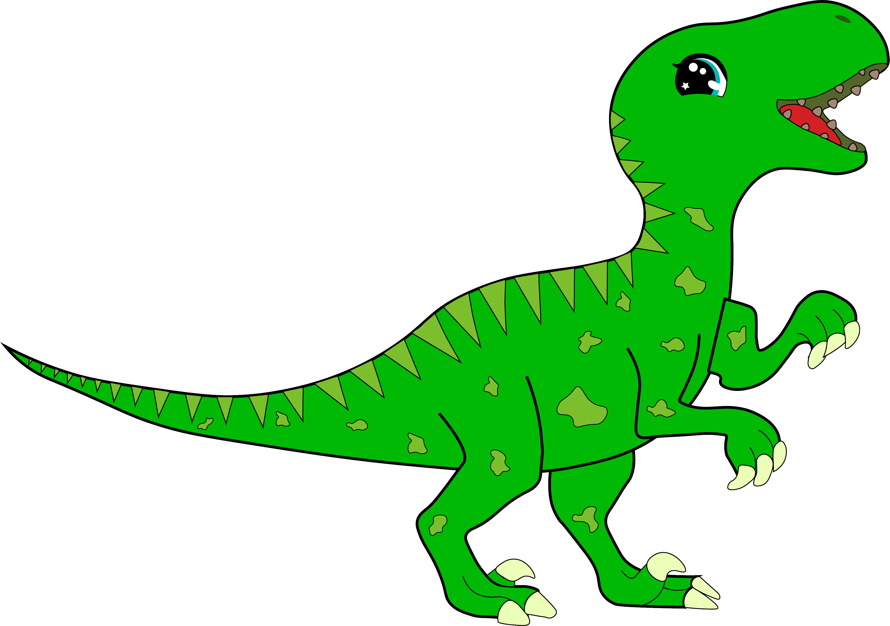
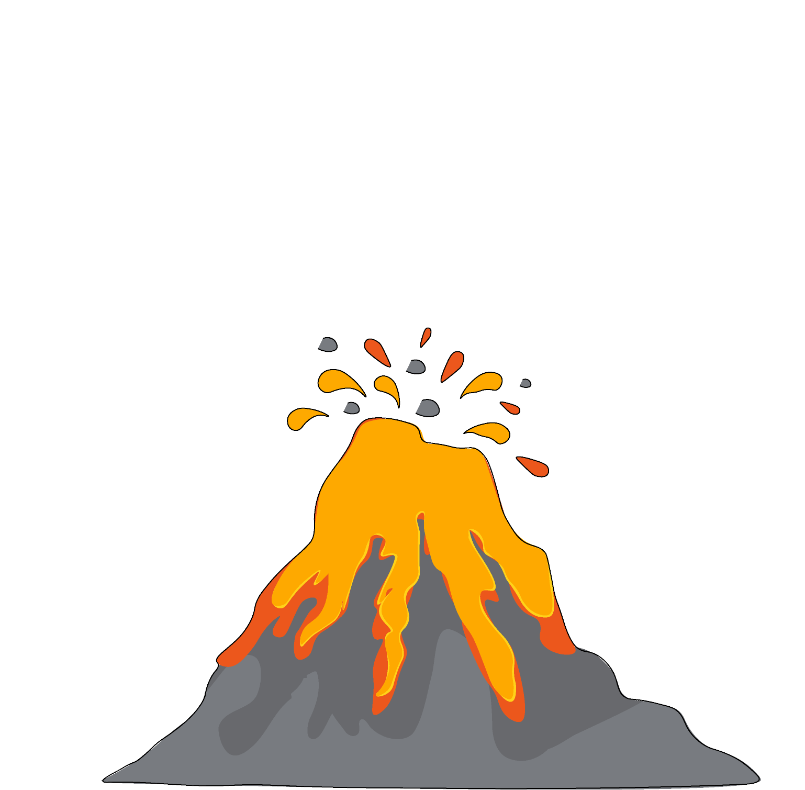
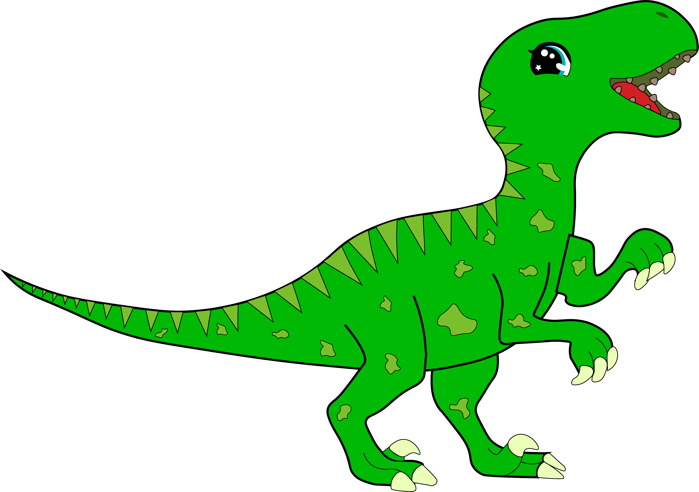
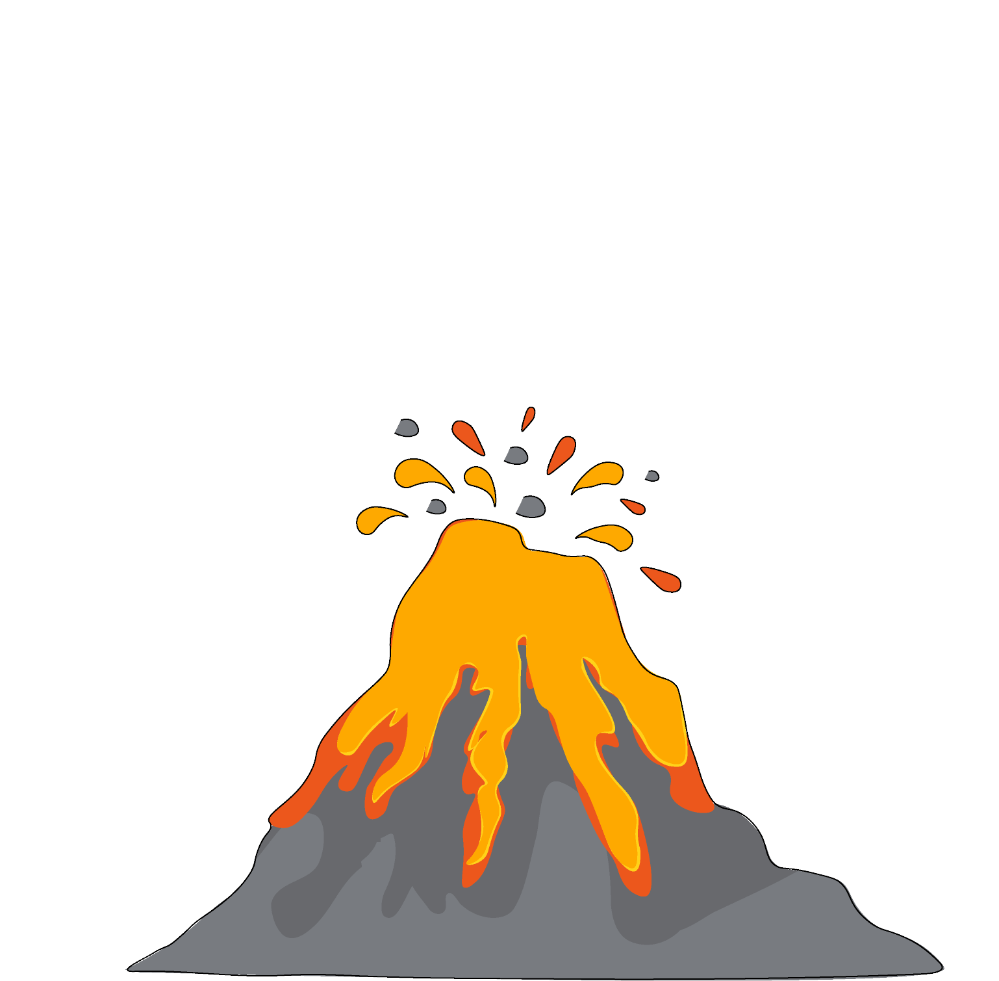

Se uma turma tem 20 alunos e 25% deles estão usando camisetas azuis,
temos quantos alunos vestidos de azul?Se uma turma tem 20 alunos e 25% deles
estão usando camisetas azuis, temos quantos alunos vestidos de azul?
 


